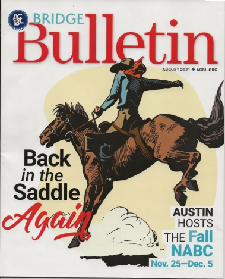
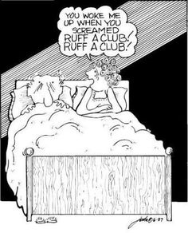

|  |
Duplicate Bridge |
He can be reached by emailing him at webmaster@soacckj.com .
Play free on-line
4 games of solitaire. No registration required. All bids explained (SAYC). |
 |  |
 |
 Recent results Webmaster did not receive the results for 10/19/2021.
|
Call 912-678-6344 to play the next one. Last week's winners |
|
Statesboro Pairs October 26, 2021 Scores after 20 boards Average: 8.0 Pair Pct Score Rank 2 65.63 10.50 1 1 Jean James - Li Li 5 59.38 9.50 2 2 Virginia Trapnell - Andrea Leonardi 4 50.00 8.00 3 3 Nancy Malcolm - Chris Caplinger |
| Complete results |

Duplicate Basics
Some commonly used conventions.
Please make suggestions for improvement
Statesboro Roster
Start a table in BBO

updated on 10/28/2021